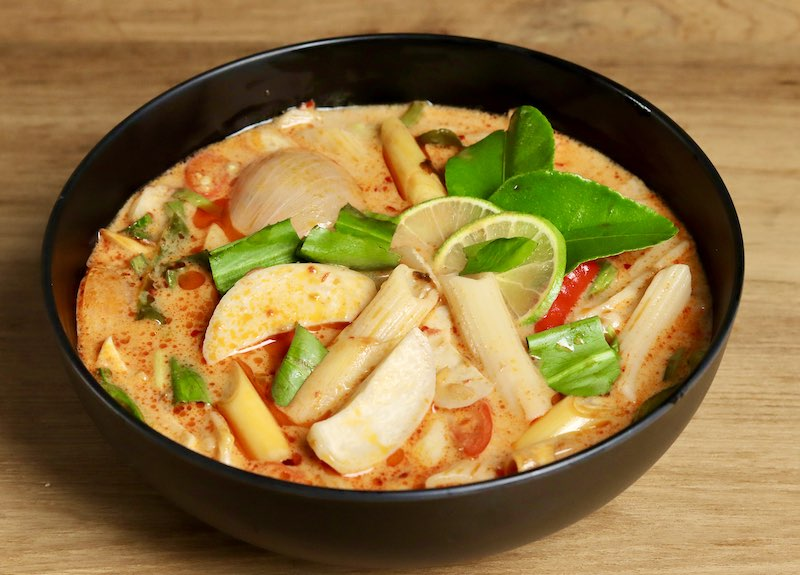

วัตถุดิบ
- น้ำเปล่า 4 ถ้วย
- หอมแดงทุบ 5 หัว
- ตะไคร้ 4 ต้น (หั่นเป็นท่อนแล้วทุบ)
- กระเทียมกลีบใหญ่ 5 กลีบ
- เห็ดฟาง (ดอกตูม) 200 กรัม
- มะขามเปียก (ทั้งรก) 2 ฝัก
- น้ำตาลปี๊บ 1 ช้อนชา
- ซีอิ๊วขาว 1 ช้อนโต๊ะ
- เกลือสมุทร 1/4 ช้อนชา
- ใบโหระพา (เด็ดเป็นใบ) 1/2 ถ้วย
- ใบกะเพรา (เด็ดเป็นใบ) 1/2 ถ้วย
- ผักชีฝรั่งซอย 1/4 ถ้วย
- พริกแห้งทอด 3 เม็ด
- ยอดใบกะเพรา (สำหรับแต่งหน้า)
STEP 1
ใส่น้ำเปล่าลงในหม้อ นำขึ้นตั้งไฟปานกลาง พอน้ำเดือดใส่หอมแดง ตะไคร้ และกระเทียมลงไปต้มสักครู่จนมีกลิ่นหอม
STEP 2
ใส่เห็ดฟางลงไปต้มจนสุกประมาณ 5 นาที
STEP 3
ปรุงรสด้วยมะขามเปียก น้ำตาลปี๊บ และซีอิ๊วขาวคนผสมให้เข้ากัน ชิมรสตามชอบ (ให้เปรี้ยวกลมกล่อม) ใส่โหระพา ใบกะเพรา ผักชีฝรั่ง และพริกแห้งทอดลงไป ปิดไฟ
STEP 4
ตักใส่ถ้วย แต่งหน้าด้วยยอดใบกะเพราให้สวยงาม เสิร์ฟขณะร้อน ๆ